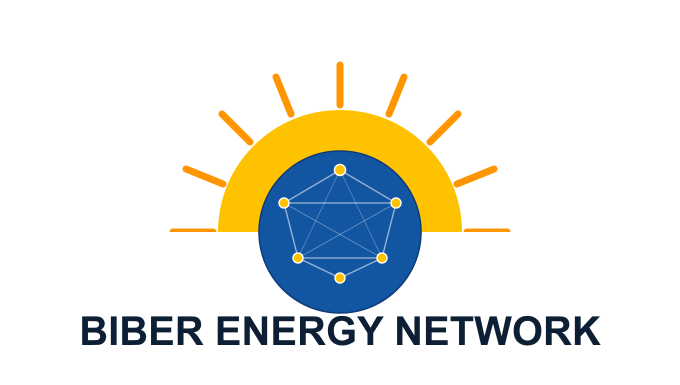
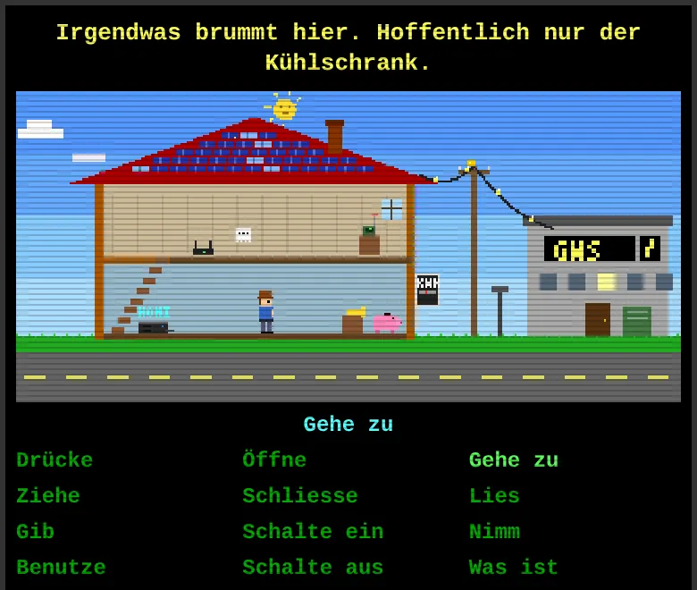
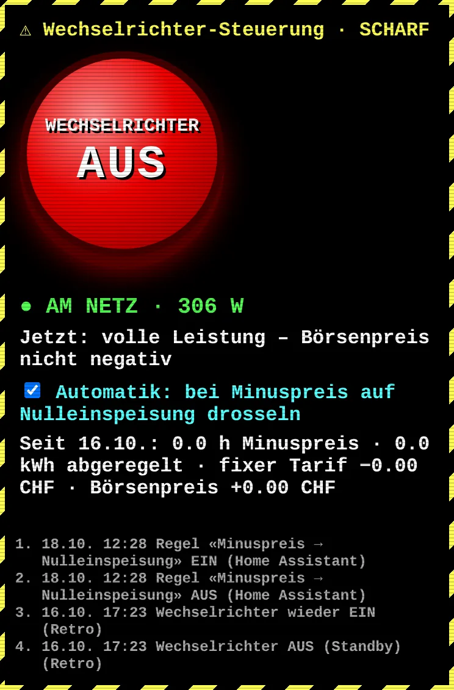
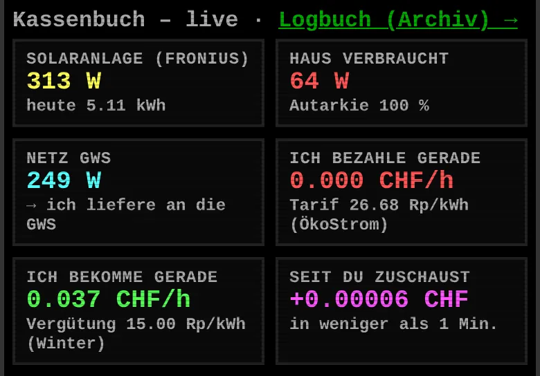
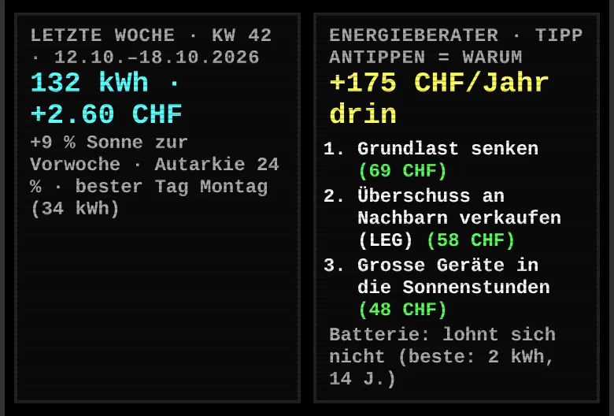

Checks whether a virtual self-consumption community (vZEV) pays off: the residents of a building with a solar system share the power they produce and so increase their self-consumption.

I live in Uerikon on Lake Zurich, Switzerland.
I work at eConnect as a consultant for solar photovoltaic systems.
I advise homeowners and businesses in Switzerland on planning and optimising photovoltaic systems – from the first idea to a well-founded basis for decision. My focus is on clear advice, technically sound solutions and making sustainable use of solar energy.
This is where I collect short notes, links and projects on solar, IT, Linux and politics.
I think it's great to be part of my own energy community: with UpGrid, solar power stays in the neighbourhood. Anyone with a PV system sells their surplus directly to the neighbours – at a better price than the usual feed-in tariff. Anyone without one gets that solar power cheaper than today. No change of contract, no conversion work, no fixed costs.
Want to join in?
⚡ Join the energy community nowAffiliate note: the sign-up link above is my personal UpGrid referral link.
All I really wanted was to know what our solar system was up to. What came out of it is a little pixel house that lives at home.biber.solar, changes with the weather and shows me, along the way, whether the sun is earning me money right now or burning it.




The roof has solar tiles that glitter in the sun, a little figure in a hat trudges around the house, and ghosts, an alien detector and a humming fridge are waiting to be examined – just like the adventure games of old. Behind the scenes, everything is calculated in real time: fresh figures from the Fronius inverter every few seconds, plus the utility's tariffs and the spot market prices. When money flows into the piggy bank, the sun was my colleague today; when it flows out, you hear a quiet «OINK».
By now the game does more than watch. A big red button switches off the inverter (press twice – this isn't the movies), and the system throttles itself as soon as feeding in would cost money – calculated with the rules that apply from 2027. A smart plug becomes a solar charging station for phone and tablet, an energy advisor tells me in Swiss francs where it pays off (and honestly whether a battery is worth it: not yet), and every Monday the weekly report arrives.
A homebrew project, sure – but one with potential. I've been doing IT infrastructure for 25 years, and that's how this toy runs too: dedicated hardware in the house with failsafe logic, daily encrypted backups and round-the-clock monitoring; a standby system for automatic failover is on its way. Operated on the principles of site reliability engineering, rethought with what AI makes possible. Because it works so well, it's turning into something bigger: homi.solar.
Curious how it's built? The full project documentation (in German) is open on GitHub.
Usually homi just counts kilowatt-hours. This time homi made me a short film: a whole October day in our solar house in 72 seconds – from the first cup of tea on grid power, to the electric car charging on surplus sunshine only, to pizza in the evening. The sun is real (measured on 12 October), the rest is re-enacted. The film itself is in German.
You can also find me on LinkedIn.
Here is my public SSH key.
My GitHub user is patbiber.
Patrick Biber | Hermann Hiltbrunner-Weg 24 | CH-8713 Uerikon
My solar knowledge base is now online as a free handbook for solar installers in Ghana and West Africa. Safety, sizing, installation, maintenance, plus a built-in system calculator.
Swiss precision meets African sunshine. Check it out, share it with an installer who needs it, and let's build more good solar. ☀️
The Solar Handbook for AfricaI've condensed my sales training "Selling solar products convincingly" and the photo record of the accompanying hands-on session into a practical guide: opening the conversation, needs analysis, customer motives, the PLN argumentation model and closing techniques – including the prioritised sales arguments from the training.
For everyone who sells solar systems in customer conversations, not just plans them. 🤝
Read the sales guide · auch auf DeutschFormulas, calculations and fundamentals of photovoltaics, solar thermal, heat pumps and electrical engineering from my training as a solar installer, collected for quick reference – for apprentices and anyone who needs to look something up on the job. (In German.)
I recently had the chance to give a talk on home batteries at the GLP Energy Lab. It focused on practical experience, typical everyday questions and when battery storage makes sense technically and economically.
I particularly value the open and well-informed discussions at these meetings. Talking with experts, interested people and practitioners is always very rewarding and shows how much know-how and commitment there is in this network.
Conversations like these motivate me to keep pushing practical solutions around photovoltaics, storage and smart energy use.Download: Presentation: PV storage (German)
A selection of tools, maps and organisations I use regularly in my own solar consulting (mostly Swiss, many in German).
Checks whether a virtual self-consumption community (vZEV) pays off: the residents of a building with a solar system share the power they produce and so increase their self-consumption.
Checks the requirements for a local electricity community (LEG): several buildings join up via the existing distribution grid to share electricity among themselves.
Neutral information platform on self-consumption communities (ZEV, virtual ZEV) and local electricity communities (LEG) in Switzerland, including a directory of billing service providers.
Finds all cantonal and municipal subsidies for solar systems, storage and other energy measures at a glance.
The federal government's official calculator for the compensation rate and subsidy of a new solar system.
Produces a first cost-benefit estimate for PV and solar thermal for any address in Switzerland: yield, costs and payback period.
Guides you through planning your own solar system in seven clear steps, from the idea to completion.
An overview of everything for an energy-efficient home: heating, energy-efficient renovation, solar systems, self-consumption and how appliances work together.
Official portal of the Swiss Federal Office of Energy: subsidy programmes, statistics, energy policy and the legal basis for solar and renewable energy in Switzerland.
Free tool from the European Commission: calculates solar irradiation and expected solar yield for practically any location in Europe.
Official land registry map of the Canton of Zurich with plot boundaries and property data.
The same registry map, here on a current orthophoto (aerial image) – handy for a first assessment of a roof.
The federal solar potential map: shows across Switzerland how well individual roofs are suited to photovoltaics.
The federal solar potential calculator for every Swiss roof – suitability, yield and possible subsidies at a glance.
Tool from the Swiss Heat Pump Association to verify compliance with noise regulations for heat pump installations.
The Swiss solar energy association – the industry body and central point of contact for solar energy in Switzerland.
Courses and further training on energy, building services and sustainable construction.
Provider of smart real estate and building solutions.
Swissgrid's live display of the frequency in the European power grid – a direct indicator of grid stability.
Wave and weather forecasts for surf spots worldwide, with live cams at many of them.
Swiss wind and weather overview specifically for kite and water sports spots.
Spot guide with information on kite spots – conditions, wind directions and local features.
Wind data and forecasts for thousands of spots worldwide, handy for planning kite or sailing sessions.
Thinking about your own solar system but not keen on a paperwork marathon? Relax: in Switzerland the bureaucratic part is smaller than its reputation. Here's the short version, without the red-tape novel.
First the reality check: a look at Sonnendach.ch tells you in 30 seconds whether your roof is a solar champion or more of a shady spot for the neighbour's tree. After that, one number matters more than raw production: how much of your own solar power you use directly. What you use yourself saves you real money – what you feed into the grid usually earns much less.
For concrete figures, try the SwissEnergy solar calculator: enter your address and you get a first overview of yield, costs and payback period – before any solar company is even involved. When it gets serious, get an independent expert opinion on your quotes – just ask me.
The rest – registering with the grid operator, a new meter, the one-off subsidy from Pronovo – is usually handled by the installer. Details at energieschweiz.ch.
SAC splitboard course, Feb. 2026 in St. Antönien. Thanks to all participants and to our mountain guide Dominik sunatiger.ch. It was great with you!
Spotted a mistake or have an idea for this page? I collect feedback and feature requests directly on GitHub.
💡 Create a feature requestYou need a free GitHub account for that. Prefer email? patrick@biber.solar